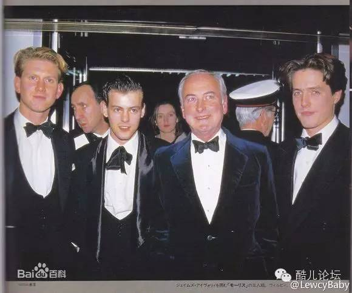

【冒刺影院】 NO.52 莫里斯的情人 本周五晚19点
莫里斯的情人 Maurice
、
《莫里斯的情人》是一部1987年的英国浪漫主义电影，改编自E.M.福斯特的同名小说《莫里斯》。电影讲述了一个发生在20年代初期英格兰的同性爱情故事，镜头随着主人公莫里斯从剑桥到社会，直到他最终与自己的人生伴侣结合。影片以旧书扉页伴随着低缓的音乐开头，以高昂的音乐结尾，将之塑造的如同电影小说一般。
|活动时间|
11月6日 19：00
|活动地点|
杭州同志中心（在微信号内回复”幸福在哪里“即可获得地址）

近期，以酷儿论坛与向阳花开组织联合构建的杭州同志中心在ZANK平台上正式开始发布我们的活动啦！！欢迎童鞋们关注ZANK应用的服务，关注杭州同志中心。ZANK上面一样可以报名参加每一期的活动哦！

点击原文即可参与报名本期活动哦！